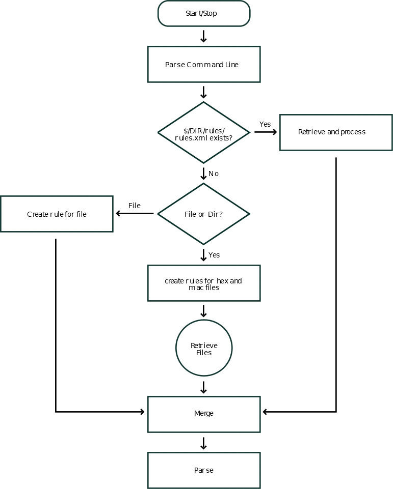

Appendix A. Handling rules
The following figure illustrates how rules are handled and the processes of retrieval and merge.

Figure A.1. Rules retrieval process
The following figure illustrates how rules are handled and the processes of retrieval and merge.
